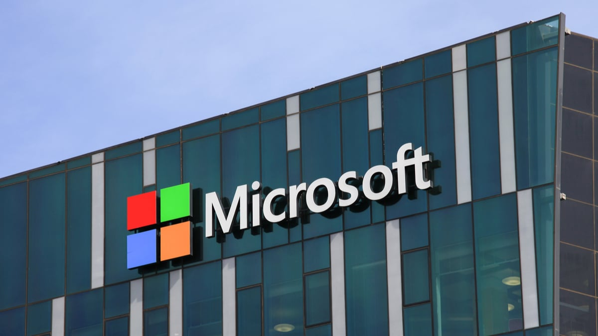

A História da Microsoft
Quando se fala em Microsoft, é de se esperar que uma simples conversa se torne uma discussão calorosa sobre a eterna rivalidade entre Windows e Mac, a gorda fortuna de Bill Gates, entre outros tópicos relacionados.
Porém, neste artigo, não vamos tratar de nada disso. O objetivo não é incentivar controvérsias entre os internautas ou gerar qualquer polêmica. Da maneira mais imparcial possível,
queremos informar nossos usuários sobre a história da gigante Microsoft, como ela conquistou 90% do mercado mundial e como ainda consegue manter seu nível de crescimento, mesmo com as fortes ameaças dos concorrentes.
Fundação
Bill Gates e Paul Allen se conheceram ainda no colégio e compartilhavam um interesse em comum: computadores. Em 1975, os dois amigos fundaram uma pequena empresa chamada Microsoft (originada a partir das palavras inglesas microcomputer e software) que pretendia, a princípio, desenvolver um software em linguagem BASIC para o computador Altair 8800 da IBM.
A compra do DOS e a jogada para cima da IBM
Em 1979, a IBM procura um sistema operacional para seu novo computador e contrata a Microsoft para o serviço. Porém, os jovens Gates e Allen se encontraram em uma situação arriscada porque não possuíam um sistema completo. A solução foi comprar o Q-DOS da Seattle Computer Products por 50 mil dólares, melhorá-lo e transformá-lo em MS-DOS (sistema operacional em disco da Microsoft).
Apesar do contrato com uma companhia de porte como a IBM, a interface de comando de texto do MS-DOS — similar com aquela utilizada pelo Unix — não conseguiu ofuscar a atenção recebida pelo Apple Lisa de, ele mesmo, Steve Jobs. O dono da Apple havia pegado a interface gráfica e a ideia de usar um mouse de outra empresa, Xerox, e adicionou-a ao seu produto. O próximo passo foi a criação do Macintosh.
Então, Bill Gates encontra nessa situação uma oportunidade para convencer Jobs a participar do projeto do novo computador da Apple. Gates não só formou a parceria como conseguiu copiar a interface gráfica do Macintosh e vender uma versão parecida no Japão. Ao descobrir isso, Jobs quebrou a aliança entre as duas empresas.
A título de curiosidade: o filme “Piratas do Vale do Silício” conta de forma interessante a história da criação das gigantes de Bill Gates e de Steve Jobs. Vale a pena conferir!
Os primeiros passos do MS Windows
A história do Windows começou em 1981, antes mesmo do lançamento do Apple Lisa, mas o produto chega ao mercado somente em 1985 com o nome de Windows 1.0. Apesar das limitações, o primeiro projeto de sistema operacional da Microsoft trouxe para o usuário doméstico o acessório mouse e a possibilidade do uso de mais de um programa ao mesmo tempo (recurso multitarefa) e uma interface colorida, com ícones e janelas. Apresentava alguns aplicativos: jogo reversi, calendário, bloco de notas, calculadora, relógio, Paint, e outros.
Interface do Windows 1.0
O segundo membro da família — Windows 2.0 — surgiu em 1987, mesmo ano em que a empresa compra o PowerPoint e a planilha Excel. A nova versão possuía uma interface parecida com seu antecessor, com gráficos consideravelmente melhores, mais recursos e ferramentas. Foram incluídos os programas MS Word e MS Excel, atalhos no teclado, a sobreposição e controle das janelas abertas, e começaram a ser usadas as palavras “minimizar” e “maximizar”.
Visual do Win 2.0
A Microsoft foi conquistando o mercado cada vez mais. Lançou ainda as versões do Windows: 3.0, 3.1, 95, 98, Me (Millennium Edition), XP e Vista. Para saber mais detalhes sobre cada um deles, acesse o artigo “História dos Sistemas Operacionais” neste link.
O Windows 7, ou Seven, é o mais novo SO da empresa. Ainda está em desenvolvimento, mas foi liberada essa semana uma versão de testes para os usuários conferirem as novidades do sistema (veja a página da versão Release Candidate aqui). Caso você ainda esteja com dúvidas sobre se vale a pena instalar ou não, confira a análise feita pelo Baixaki e outros artigos relacionados ao Windows Seven.
- Windows 7: Análise
- Windows 7: agora é oficial
- Modifique seu sistema operacional para ele ficar parecido com o Windows 7
- Lista de atalhos do Windows 7
- Dual boot: instale o Windows 7 sem abrir mão do XP ou Vista
O mundo dos softwares não é o bastante
Mesmo não conhecendo o Bill Gates, podemos ver pelo comportamento da sua companhia que ele é um homem extremamente competitivo. Basta analisar alguns fatos: o Windows usou as inovações do Macintosh, Gates comprou uma parte das ações da Apple, a Microsoft lançou vários produtos para competir com a concorrência do mercado.
Internet Explorer
A Internet se popularizou com o Mosaic da NCSA em 1993, e não demorou muito para que surgissem outros navegadores. O próprio diretor do time do Mosaic fundou uma competidora, a Netscape, e lançou um navegador com o mesmo nome no ano seguinte.
Não querendo ficar para trás, a Microsoft criou o Internet Explorer para uma versão do Windows 95. Como o programa foi incluído no software, como ainda é hoje, ele venceu a batalha contra o Netscape e tornou-se o navegador mais usado pelos internautas.
No entanto, hoje, o IE vê seu reinado ameaçado por concorrentes de peso. Um deles é o Mozilla, criado por ninguém menos que a antiga Netscape.
Internet Explorer 8
Windows Media Player
O Windows já possuía um tocador de mídia desde a versão 3.0, mas a presença do Real Player no mercado fez surgir a necessidade de um substituto a altura contra a RealNetworks. Assim, foi incluído no sistema operacional o Windows Media Player. Atualmente, concorre diretamente com o Real Player, o Winamp e o iTunes.
Windows Media Player do Vista
Live Search
O Live Search faz parte do pacote Windows Live e é também conhecido como o sistema de busca do MSN.
Dos produtos feitos pela Microsoft para penetrar no mercado e desbancar os rivais, o que tinha dado certo com o Internet Explorer e o Media Player, o Live Search não conseguiu mesmo atingir seu propósito. Aliás, ele foi um fracasso total porque seu competidor era ninguém menos que o Google!
Microsoft Game Studios
Foi uma das primeiras subsidiárias da Microsoft a ser lançada, em 1994. Possui uma série de estúdios responsáveis por criar e distribuir jogos para computador e consoles (Xbox e Xbox 360), como Age of Empires, Age of Mythology, Halo, Lost Odyssey, Project Gotham Racing, entre outros.
Familia Box
O console foi produzido para bater de frente com o Game Cube da Nintendo, o Dreamcast da Sega e o PlayStation 2 da Sony, ou seja, era a Microsoft contra três grandes empresas japonesas.
Zune
Zune
Vendo o enorme sucesso do iPod, a Microsoft desenvolveu seu próprio mp3 player, o Zune. Seguindo o exemplo do portátil da sua grande rival, reproduzir músicas, vídeos, fotos, estações de rádio, podcasts. Você pode se conectar com outros aparelhos Zune por uma rede wireless e via USB com o Windows e o console Xbox 360. Além disso, possui um serviço de downloads, o Zune Marketplace, assim como a Apple. E não é que o design do Zune também é parecido com o do iPod!
O presente e os novos desafios
A Microsoft pode não ser a melhor empresa e o Windows pode não ser o melhor sistema operacional existente. Porém, não tem como negar a importância dessas duas figuras na história da informática, muito menos da pessoa por trás de tudo isso. Afinal, a Microsoft é esse império que é hoje devido à espionagem industrial, jogadas comerciais e, principalmente, a visão de Bill Gates.
Desde a fundação, ele percebeu que o futuro estava no software, não no hardware como acreditava a IBM, e investiu pesado no aperfeiçoamento do Windows e dos programas do sistema operacional. Não apenas aqueles produzidos pela Microsoft, como os aplicativos de outros desenvolvedores, que contribuem fortemente para o crescimento e a utilização do Windows pela maioria dos usuários de computador. Steve Ballmer reconhece a importância deles:
Falando em Steve Ballmer, com a aposentadoria de Bill Gates no ano passado, ele é o novo chefão do império MS. A tarefa dele não será nada fácil! O mercado da informática está evoluindo cada vez mais, as disputas entre as empresas e seus produtos estão mais acirradas, além de haver outros competidores no páreo.
Tendo em vista a pouca popularidade do Windows Vista, será o que Seven vai agradar os usuários ou os outros sistemas operacionais vão derrubar o reinado do SO da Microsoft? Ballmer não parece ser o tipo de diretor que deixaria isso acontecer, será que ele terá sucesso nesse desafio? Como será o relacionamento dele com Steve Jobs?